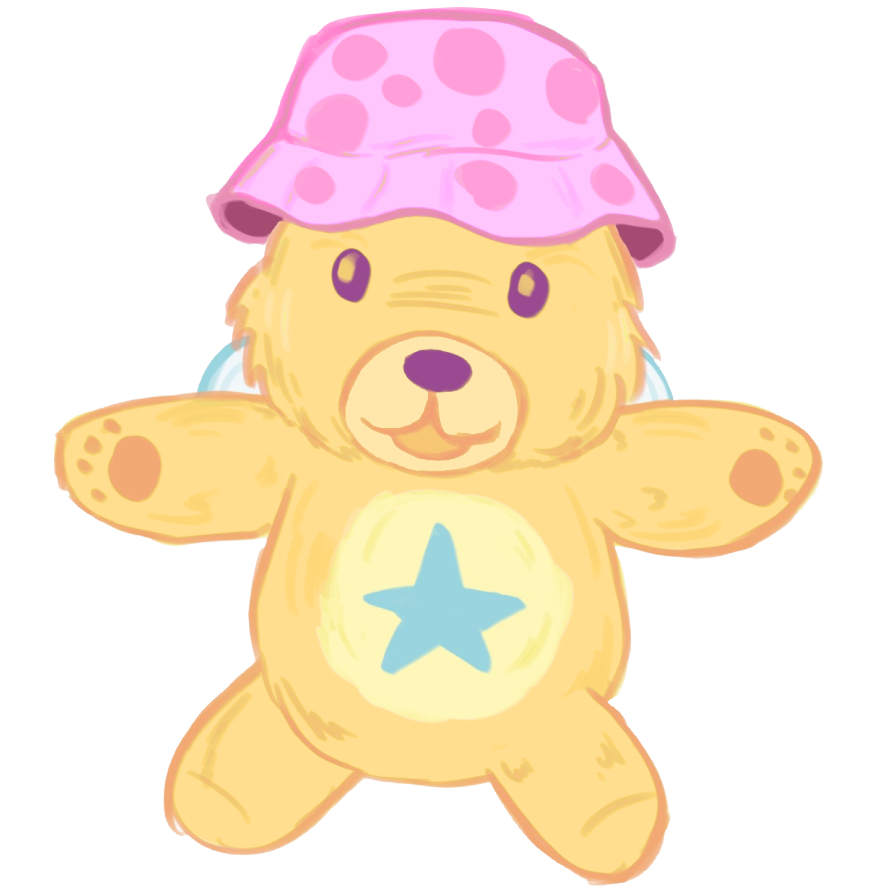
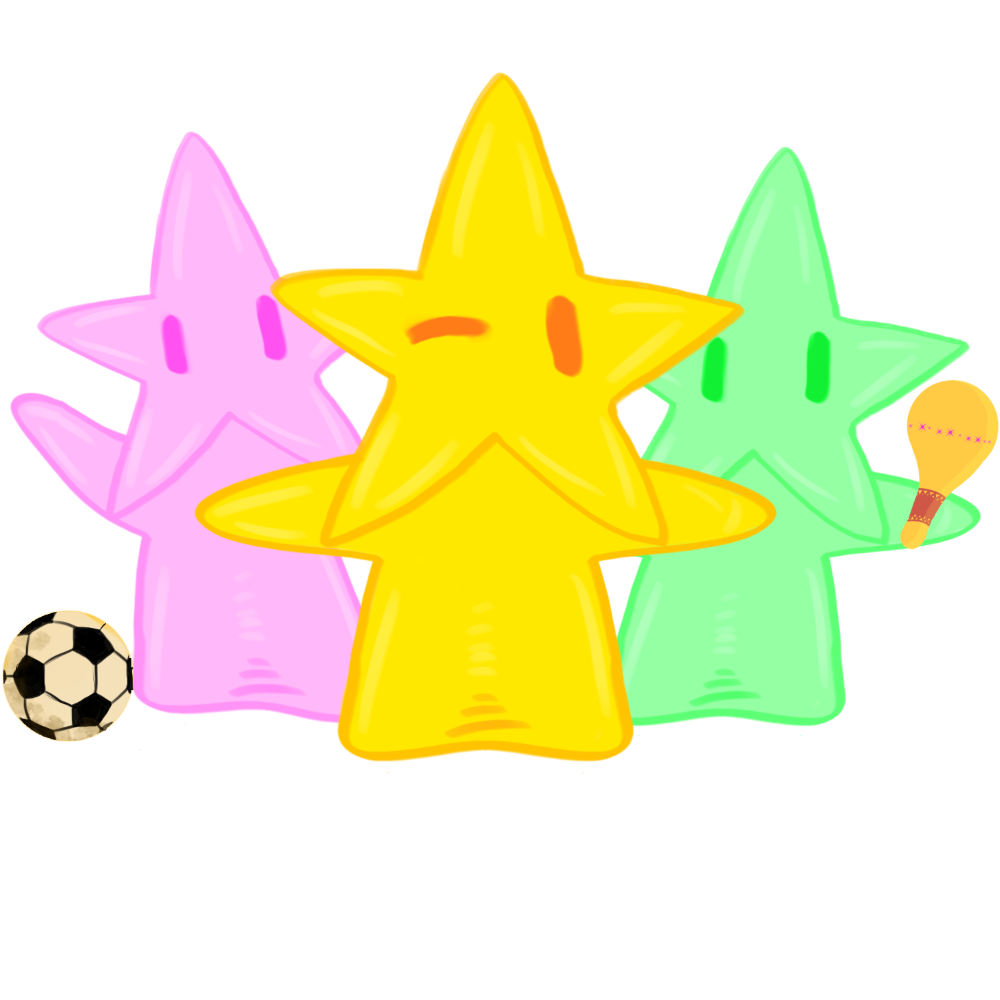
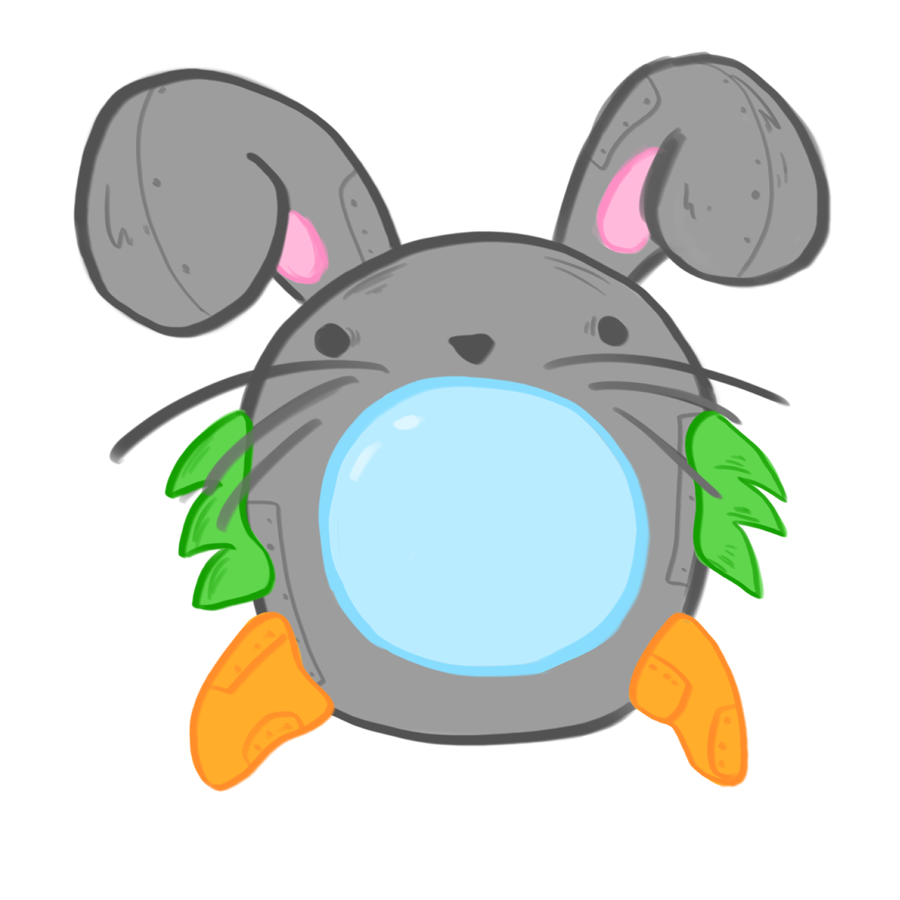

🤖 Sof-IA
Una guía amigable que acompaña a los niños en cada actividad. Sof-IA explica, anima y hace que el viaje por Nova sea más cercano y seguro, además es una osita de peluche!!.
Universo narrativo infantil + experiencias interactivas
Nova es un proyecto creado para acompañar a niños y familias con una experiencia amable, espacial y llena de imaginación. Aquí conviven cuentos, juegos y piezas multimedia diseñadas para explorar con calma y curiosidad.

Una guía amigable que acompaña a los niños en cada actividad. Sof-IA explica, anima y hace que el viaje por Nova sea más cercano y seguro, además es una osita de peluche!!.

Pequeñas energías del universo de Nova. Representan esperanza, descubrimiento y la magia que habita en cada uno de nosotros, ellos buscarán un hogar en compañia de Nova.
Son seres a los que les gusta bailar y disfrutar con nuevas personas. Tienen colas que pueden curar cualquier mal.

¡Una amigable conejo que también es una nave espacial! Ella será el transporte de Nova y compañía durante su travesía espacial.